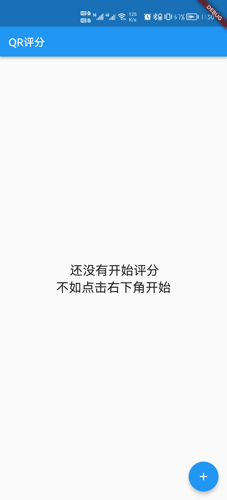

问题与采取的策略
身份确定问题
如何判断一个人的身份，或者说，唯一地标明一台设备？
这一点其实很好解决，安卓会给每一台设备提供唯一的ID，我们用这个ID来确认设备身份。
对原有算法的改进
原有算法存在几个问题：首先，设备身份无法确认，这一点我们已经解决过。除此之外还有以下问题：
- 我们如何确认一个人已经完成两轮打分，或者说，如何辨别一个人在整个过程中是否出现了只扫一次码的情况？
- 原有策略将打分发起者与打分者进行身份上的区分，这种区分是否有必要？或者说，是否可以采取一种策略，让大家在扫描最后完成的二维码后，都能看到打分结果？
- 如何自动确认此次打分可以结束？而不是由发起者去手动确认。
- 消息传递格式问题
基本代码流程
首先，定义两个对象：打分过程与个人评分。
1
2
3
4
5
6
7
8
9
10
11
12
13
14
15
16
17
18
19
20
| class Mark{
late double score;
late int num;
late List<String> memberList;
Mark({required this.score,required this.num,required this.memberList});
Mark.fromJson(Map<String, dynamic> json){
score = json['score'];
num = json['num'];
List list = json['memberList'];
memberList = list.map((e) => e.toString()).toList();
}
Map<String, dynamic> toJson() {
return {
'score': score,
'num': num,
'memberList':memberList
};
}
}
|
1
2
3
4
5
6
| class Member{
late String id;
late int time;
late double value;
Member({required this.id,required this.time,required this.value});
}
|
我们通过这两个对象，对整个打分流程进行维护，代码逻辑如下：
1
2
3
4
5
6
7
8
9
10
11
12
13
14
15
16
17
18
19
20
21
22
23
24
25
26
27
28
29
30
31
32
33
34
35
36
37
38
39
40
41
42
43
44
45
46
47
48
49
50
51
52
53
54
55
56
57
58
59
60
61
62
63
64
65
66
67
68
69
70
71
72
73
74
75
76
77
78
79
80
81
82
83
84
85
86
87
88
89
90
91
92
93
94
95
96
97
98
99
100
101
102
103
104
105
106
107
108
| Future generateCode(BuildContext context,String inputNum,String source) async {
final DeviceInfoPlugin deviceInfoPlugin = DeviceInfoPlugin();
String? id;
Mark mark;
if (Platform.isAndroid) {
var build = await deviceInfoPlugin.androidInfo;
id = build.androidId;
} else if (Platform.isIOS) {
var data = await deviceInfoPlugin.iosInfo;
id = data.identifierForVendor;
}
mark = Mark(score: 0, num: 0, memberList: []);
if(source.isNotEmpty) {
try {
mark = Mark.fromJson(const JsonDecoder().convert(source));
} catch (e) {
Fluttertoast.showToast(msg: '非法二维码');
return;
}
}
if(id != null){
Member member = Member(id: id, time: logic.times.value, value: double.parse(inputNum));
if(_isEnd(mark,member) == Constant().endNormal){
double score = _getScore(mark);
logic.isStart.value = false;
Navigator.pop(context);
Navigator.push(context, MaterialPageRoute(builder: (context) => EndPage(score: score,)));
return;
}else if(_isEnd(mark,member) == Constant().endError){
Fluttertoast.showToast(msg: '结束出错：还有人没有进行第二轮打分');
return;
}else{
if(_isLegal(mark, member)){
mark = _markScore(mark, member);
}else{
Fluttertoast.showToast(msg: '出错：您没有进行第一轮打分');
return;
}
}
}else{
Fluttertoast.showToast(msg: "设备id获取失败");
return;
}
String str = const JsonEncoder().convert(mark.toJson());
Uint8List bytes = await scanner.generateBarCode(str);
logic.isStart.value = true;
if(logic.times.value == 2){
Navigator.pop(context);
}
Navigator.push(context, MaterialPageRoute(builder: (context) => QrCodePage(bytes: bytes)));
}
Mark _markScore(Mark mark,Member member){
logic.times++;
if(member.time == 1){
mark.score = mark.score+member.value + Constant().s;
mark.num++;
mark.memberList.add(member.id);
}else{
mark.score = mark.score - Constant().s;
mark.memberList.remove(member.id);
}
return mark;
}
bool _isLegal(Mark mark,Member member){
if(member.time == 2){
if(mark.memberList.contains(member.id)){
return true;
}
}else if(member.time == 1){
return true;
}
return false;
}
int _isEnd(Mark mark,Member member){
if(logic.times.value == 3){
if(mark.memberList.isEmpty){
return Constant().endNormal;
}
}
return Constant().notEnd;
}
double _getScore(Mark mark){
return mark.score/mark.num;
}
bool _isNumber(String str){
final reg = RegExp(r'^-?[0-9]+');
return reg.hasMatch(str);
}
|
相应的，流程图如下：

通过这种方式，我们解决了问题2、3。
打分轮次问题
那么，我们如何确认一个人已经完成两轮打分？
这其实跟我们构造的评分对象有关系，每次合法打分过程中，如果用户是第一次打分，则将用户id添加到Mark对象维护的memberList列表，并将打分人数num加一，并完成对score的修改。如果用户是第二次打分，则将用户id从Mark对象维护的memberList列表中删除，并完成对score的修改即可。如果在第二轮删除时没有发现该用户id，说明该用户没有进行第一轮打分，如果最终在结束时，memberList列表为空，则说明大家都完成了两轮打分，否则就是列表中的设备没有进行第二轮打分。
这样我们可以保证整个流程的正确性。
编码格式问题
我们的需求是：方便地将一个对象序列化与反序列化，序列化结果可以用字符串表示（主要是排除掉二进制流），处理效率要足够高。
那么，显然非JSON莫属。我们对Mark对象定义了序列化与反序列化的方法，从而保证编码与传输上的高效。
非核心的小功能
图片保存与分享
主要涉及到的是安卓原生文件的uri与文件路径的转换问题，直接使用了网上现成的解决方案。
可以改进之处
权限问题
基于一个现实的场景：公司内部的打分，如何保证我们的二维码不会被泄露到公司外部，或者被某也员工故意泄露以造成 “刷分” 的情况。
我们可以在Mark中标明某些信息，用于控制该权限。
比如，如果是公司内部统一采购的移动设备，我们可以保证这些设备有共同的id特征，比如共同的开头。或者，更进一步的，我们可以限制设备id的范围。
但除此之外，我们可能就需要配置一台服务器，在扫码时请求服务器进行鉴权。当然，服务器的逻辑也是对id进行比对，这样至少可以保证身份信息不被泄露。
打分记录
现在的打分都是打完后可视，新一轮打分开始后就会被删除。我们可以将其进行记录（当然，使用服务器记录更好）。同时我们也可以对打分添加标题、时间等信息，方便我们调出打分记录时对此次评分有更清楚的认知。
其他类型的服务
我们可以在此基础上拓展其他服务，当然，这很简单。
界面展示
初始时没有开始评分

点击加号开始进行评分，点击对号跳转到二维码界面

该界面用于展示二维码，右上角按钮用于保存图片或分享该二维码
保存二维码结果如图：
开始评分后会显示轮次：

点击右下角按钮可以开启新一轮评分

完成后会显示结果

参考
Flutter 如何获取设备的唯一码
https://pub.flutter-io.cn/packages/image_gallery_saver
https://pub.flutter-io.cn/packages/share_plus
https://pub.flutter-io.cn/packages/qrscan
https://pub.flutter-io.cn/packages/image_picker
https://pub.flutter-io.cn/packages/device_info_plus
https://pub.dev/packages/uri_to_file